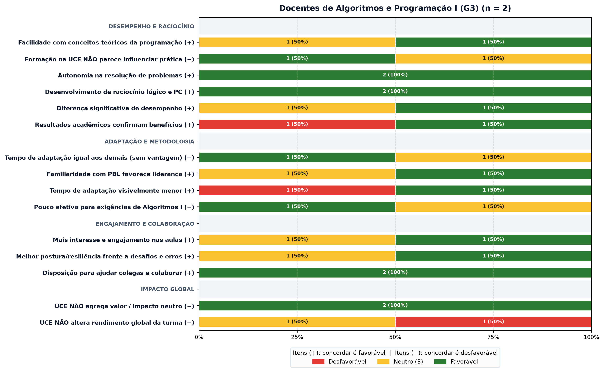

Questionário dos Docentes (G3)
Respostas dos 2 docentes de Algoritmos e Programação I. Com dois respondentes, cada barra mostra a contagem e o percentual. Verde indica percepção favorável, vermelho desfavorável e amarelo neutro. Itens (+): concordar é favorável; itens (−): o enunciado é negativo e concordar é desfavorável.
Itens Likert por bloco

Contagens por item
| Item | Discorda (1–2) | Neutro (3) | Concorda (4–5) | Média |
|---|---|---|---|---|
| Desempenho e raciocínio | ||||
| Facilidade com conceitos teóricos da programação (+) | 0 | 1 | 1 | 4,00 |
| Formação na UCE NÃO parece influenciar prática (−) | 1 | 1 | 0 | 2,00 |
| Autonomia na resolução de problemas (+) | 0 | 0 | 2 | 4,00 |
| Desenvolvimento de raciocínio lógico e PC (+) | 0 | 0 | 2 | 4,50 |
| Diferença significativa de desempenho (+) | 0 | 1 | 1 | 3,50 |
| Resultados acadêmicos confirmam benefícios (+) | 1 | 0 | 1 | 3,50 |
| Adaptação e metodologia | ||||
| Tempo de adaptação igual aos demais (sem vantagem) (−) | 1 | 1 | 0 | 2,00 |
| Familiaridade com PBL favorece liderança (+) | 0 | 1 | 1 | 3,50 |
| Tempo de adaptação visivelmente menor (+) | 1 | 0 | 1 | 3,50 |
| Pouco efetiva para exigências de Algoritmos I (−) | 1 | 1 | 0 | 2,00 |
| Engajamento e colaboração | ||||
| Mais interesse e engajamento nas aulas (+) | 0 | 1 | 1 | 3,50 |
| Melhor postura/resiliência frente a desafios e erros (+) | 0 | 1 | 1 | 3,50 |
| Disposição para ajudar colegas e colaborar (+) | 0 | 0 | 2 | 4,00 |
| Impacto global | ||||
| UCE NÃO agrega valor / impacto neutro (−) | 2 | 0 | 0 | 1,50 |
| UCE NÃO altera rendimento global da turma (−) | 0 | 1 | 1 | 3,50 |